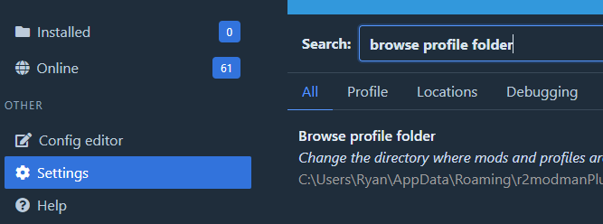
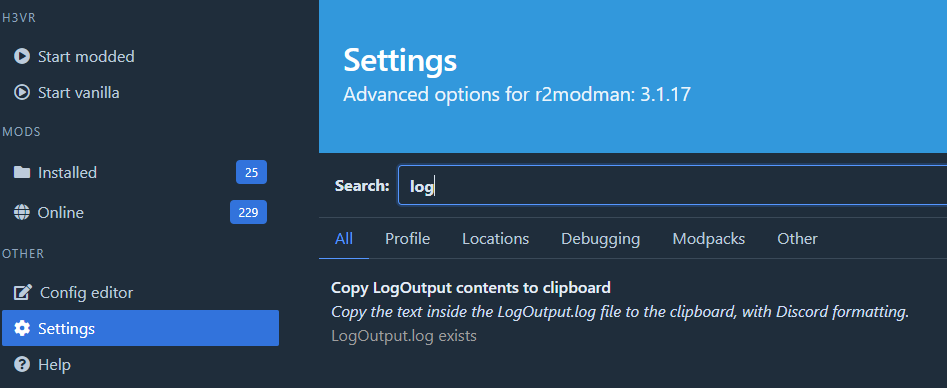

What is the BepInEx Log
The BepInEx log is essentially just a list of messages from the game and plugins, a log of what has happened since you started the game. When you run the game modded a console window appears along side it and shows the log in real-time, but the messages are also written to a file in your profile folder so the messages can be retreived after the game is closed (usually for the purposes of troubleshooting an issue).
Some mods may also implement in-game features using the log, such as Sodalite's in-game log panel which can be accessed from the wrist menu at any time.
Finding your log file
Open r2modman and go to the
Settingssection. Open your profile folder by clicking the following button:
After clicking on the settings entry your current r2mm profile folder will be opened. Inside might look something like this:
[Current profile name]/ BepInEx/ mods.yml ...Open the folder named
BepInEx.The file named
LogOutput.logis your log file, it can be opened with any plain text editor, such as Notepad.
How to read your log file
Here's a quick breakdown of what you might see in your log file with some annotations. First we'll start with a simple info message. These are purely informational and help establish some context for when something goes wrong as it's helpful to know what comes before and after errors.
⬐ This first column indicates the severity of the message. Info / Warning / Error
[Info : Deli] Deli bootstrap has begun! Version 0.4.2 (main @ 4952ff9)
⬑ The second column tells you where this message came from.
Note
Sometimes log messages might show up as coming from the "Unity Log". Most of the time these messages come from the game itself, but in rare cases it might be a plugin using the game's Unity logger instead of the BepInEx provided logger.
Next, we'll take a look at some warnings. Warnings can be a bit ambiguous as they sometimes are important and sometimes
can be ignored. For example, most warnings from HarmonyX can be ignored as they are intended for the mod developer and
not the end user. With any other kind of warning you will have to read the message to see if it may be important.
[Warning: HarmonyX] AccessTools.Property: Could not find property ...
⬑ Warning is from Harmony, safe to ignore.
Finally we have errors. These are what you are looking for and are very easy to spot. They come in two kinds: the expected errors, i.e. errors that a mod itself logs when it detects something is wrong; and the 'exceptions' that occur when something completely unexpected happens.
The expected errors can usually be categorized by being only one single line, in this example Deli has detected that some mod "X" which is installed also needs "Y" to function, but it is missing! These expected errors are usually very easy to read and can often be solved just as easily as they tell you exactly what is wrong.
[Error : Deli] X depends on Y 2.0.0, but it is not installed!
Next we have the unexpected errors, the exceptions. These are not usually errors you solve by yourself and will be much longer and contain almost entirely information exclusively for the mod author. They will still contain a message on the first line but it may be of no use to you, and the rest just tells the author where in the code this happens. If you see one of these, chances are you will need to ask for assistance and share your log file through Discord.
[Error : Unity Log] ArgumentException: Undefined target method for patch method ...
Stack trace:
HarmonyLib.PatchClassProcessor.PatchWithAttributes (System.Reflection.MethodBase& lastOriginal)
HarmonyLib.PatchClassProcessor.Patch ()
Rethrow as HarmonyException: Patching exception in method null
HarmonyLib.PatchClassProcessor.ReportException (System.Exception exception, System.Reflection.MethodBase original)
HarmonyLib.PatchClassProcessor.Patch ()
HarmonyLib.Harmony.PatchAll (System.Type type)
HarmonyLib.Harmony.CreateAndPatchAll (System.Type type, System.String harmonyInstanceId)
TNHTweaker.TNHTweaker.Awake ()
Sharing It Over Discord
If you are asked to share your log file to receive assistance, sharing it via Discord is quite easy.
Go to the
Settingssection of r2modmanSearch for "log", and select "Copy LogOutput contents to clipboard".

Then, paste the log output into Discord by right clicking on the chat box and selecting 'paste', or with the chat box focused use
Ctrl + VA message will appear asking you to upload a file instead, insert a caption describing the issue if you haven't already, then click upload.

Hopefully someone will look at your log soon and provide a fix or forward the issue to whoever needs to see it.